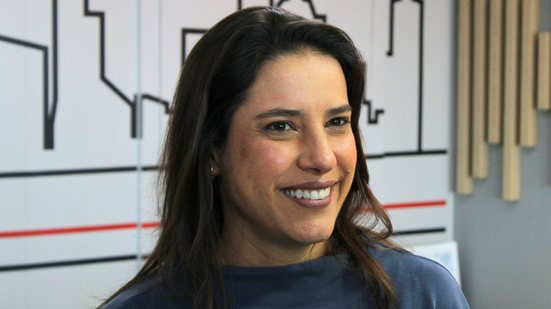

Painel das Eleições
Comparador de Propostas de Planos de Governo
Ivan Moraes
254 Propostas
📄 PDF
João Campos
178 Propostas
📄 PDF

Raquel Lyra
168 Propostas
📄 PDF
📊 Visão Geral & Gráficos
🔍 Todas as Propostas